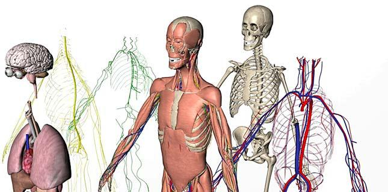
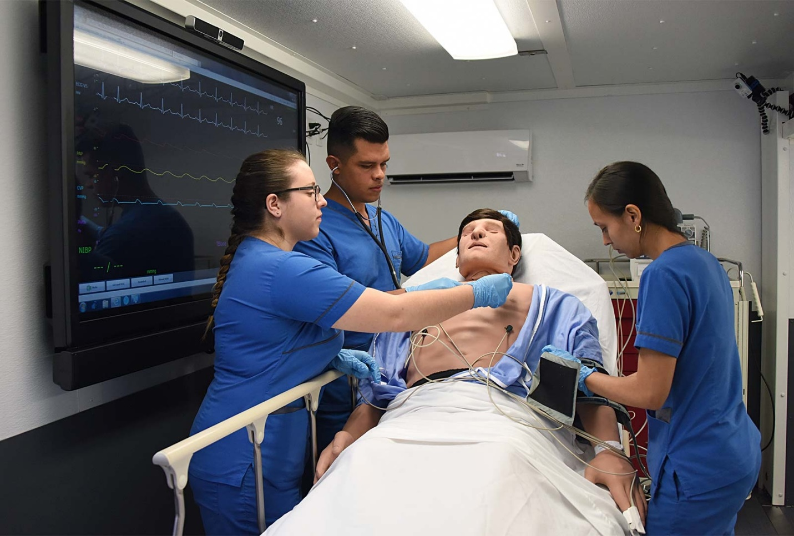
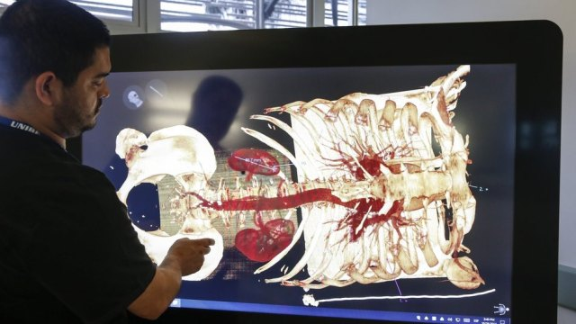

Simulación como tecnología moderna para la salud en Centroamérica
Yessenia Janira Marroquín Martínez
Ymjm93@gmail.com
Estudiante de Ingeniería en Ciencias y Sistemas - USAC
Palabras clave: Simulación, modelación, software, simio, tecnología.
Las simulaciones médicas, en general, pretenden imitar pacientes reales, regiones anatómicas o tareas clínicas, y / o reflejar las circunstancias de la vida real en que se prestan los servicios médicos. El término simulación en este artículo se refiere a dispositivos de simulación particulares. Estos pueden tomar muchas formas y abarcar el rango de baja a alta fidelidad, y desde dispositivos para usuarios individuales hasta simulaciones para grupos de aprendices.

Autor: Desconocido Dirección electrónica de la imagen: https://danielrparente.files.wordpress.com/2013/01/human3d.jpg
{kind=link}
Simulación en Centroamérica
La simulación es relativamente nueva en muchos países de bajos ingresos, generalmente es en los hospitales prestigiosos donde se ve la aplicación de los simuladores. La palabra "simulación" implica una imitación de un proceso de la vida real para proporcionar una experiencia realista en un entorno controlado. Se puede considerar como un lugar para aprender de los errores sin causar ningún daño, por ello en los hospitales utilizan la simulación para entrenar y evaluar el trabajo en equipo al momento de una operación o rutinas diarias. Los eventos de simulación muestran una retroalimentación de cómo se reaccionaría en situaciones de la vida real y, en cierto sentido, muestran cómo funcionan los procesos inconscientes. Ya que no está ocurriendo en la vida real, la simulación permite aprender de los errores. Como tal, puede ayudar a prevenir errores y optimizar respuestas en situaciones críticas. Por ejemplo, el ruido u otras perturbaciones pueden simularse y dar una buena idea de cómo funciona la distracción, otro ejemplo puede ser la aglomeración de pacientes para un diagnostico y prever cuantas máquinas se necesitan para cumplir con la demanda de pacientes.
Costa Rica cuenta con un hospital de simulación en la Universidad Hispanoamericana, donde brindan un espacio de práctica donde se emplee la simulación clínica como metodología educativa, para que los estudiantes puedan desarrollar las competencias técnicas y sociales propias de las carreras de Ciencias de la Salud, manteniendo la seguridad de la persona como pilar.
Al aprender en un entorno libre de riesgos, se pueden cometer errores sin daño potencial para los pacientes, y las conductas pueden ajustarse de acuerdo con el desarrollo del dominio de habilidades y habilidades. La capacitación en simulación brinda una oportunidad invaluable para que los estudiantes de atención médica apliquen la teoría para practicar y entrenar en procedimientos y técnicas a los que de otra manera no tendrían acceso, todo ello sin correr el riesgo de la seguridad del paciente (es decir, durante situaciones de emergencia y reanimación).
Asimismo, Costa Rica es el primer país por primera vez en toda Latinoamérica, que cuenta con un centro altamente especializado móvil, este será capaz de trasladarse a zonas rurales y urbanas con el propósito de aumentar la excelencia de los procedimientos clínicos que realizan profesionales de salud a nivel nacional. Se trata del Centro de Simulación Móvil-UCR, a cargo de la Escuela de Enfermería de la Universidad de Costa Rica (UCR), el cual permitirá que tanto estudiantes como enfermeros ya titulados, así como otros expertos dedicados a la atención de pacientes, practiquen diversos tipos de procedimientos clínicos de importante complejidad en modelos humanos antes de intervenir a una persona real.
 Autor: Laura Rodríguez Rodríguez Dirección electrónica de la imagen: Enlace
{kind=link}
En caso de simuladores de realidad virtual y aplicación de inteligencia artificial comienza a utilizarse y se convierte en un asistente avanzado en hospitales, por ejemplo, con rayos X, tomografía computarizada (TC), imágenes de resonancia magnética (IRM) o una prueba de ultrasonido, el algoritmo del sistema recrea la imagen en forma tridimensional (3D).
 Autor: Oscar Vargas Dirección electrónica de la imagen: Enlace
Conclusión:
La única forma de ver qué simulador modela mejor un escenario o es más preciso es haciendo comparaciones. La pregunta de qué simulador es el mejor en una situación específica es importante para los desarrolladores. Las simulaciones médicas encuentran cada vez más un lugar entre las herramientas de simulación para la enseñanza y la evaluación en salud. Los avances tecnológicos han creado una amplia gama de simuladores que pueden facilitar el aprendizaje y la evaluación en numerosas áreas de la educación médica. La tecnología de simulación es una gran promesa para mejorar la capacitación de los médicos y, por lo tanto, para impactar en la seguridad del paciente y los resultados de la atención médica de una manera positiva y significativa.
Referencias:
Hospital de Simulación UH. https://uh.ac.cr/desarollocompetencias/detalle/simulacion